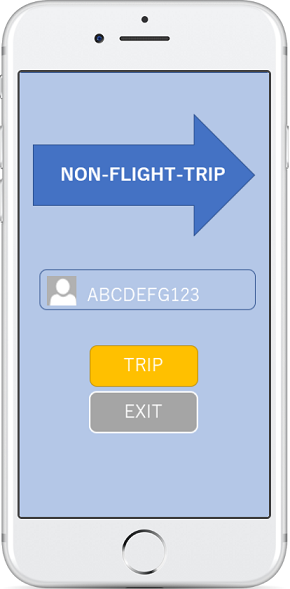

Slack, Marvel, mind mister
2020年5月～8月
他学生に現在ウィズコロナの外出自粛における状況下で、外出や旅行に関するエスノグラフィのインタビュー調査を行った。その調査によって明らかとなった、学生が工夫としてドライブ外出を行っているという点や、VRよりも実体験が外出の醍醐味だという意見。さらにそういった外出できない状況で旅行へのニーズが高まってるという現状などを考慮し、アプリケーションをペーパープロトタイピングという形でデザイン。
その後、そのアプリケーションを使用するペルソナとなる、人物やシチュエーションをシナリオとして検討。
そこから得られた気づきを、基にしてデジタルプロトタイピングという形で改良し、UXをデザインした。
マインドマップを活用し、現在ウィズコロナの外出自粛における状況下で、外出や旅行に関するエスノグラフィのインタビュー調査を行うため、旅行や外出のその周辺にも関連してきそうな事項まで検討し、インタビューガイドを製作した。
インタビューガイドを基に、現在ウィズコロナの外出自粛における状況下で、外出や旅行に関するエスノグラフィのインタビュー調査を3人の生徒に行った。
エスノグラフィ調査の結果を基に、第一段階の試作品を作製、アウトプットの早さに特化させるため紙とペンで絵を書きデザイン。
作成した試作品が使われる架空の人物(ペルソナ)と使われるシチュエーション(シナリオ)をデザインし、気づきをまとめた。
世界中のドライブレコーダーや、防犯カメラをネットワークで連携し、視聴可能にすることでたくさんの地域をボーダレスかつタイムレスに旅できるようにしたアプリケーション。
また、街にあるショップの口コミを可視化できるようすることで、世界を超えたユーザ間でのコミュニケーションを実際の空間上で可能にしたアプリケーション。
旅行先では景色の撮影や、お土産など限られた商品は購入可能。後日郵送で自宅に届く。
ペルソナシナリオからの気づきによって得られたアイデアをさらに反映し、第二段階の試作品をデジタルでデザインした。
下のリンクから閲覧可能です。
エスノグラフィー調査やペルソナ等のデータは以下のリンクからダウンロードできます。
→別のポートフォリオを見る